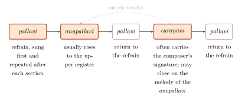
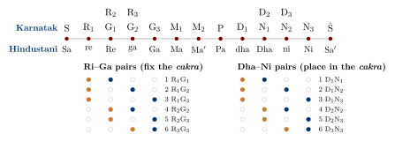

Chapter 8: Karnatak Music¶
Karnatak (Carnatic) music is the art music of South India — of Tamil Nadu, Karnataka, Andhra Pradesh, Telangana and Kerala — and of the South Indian communities of Sri Lanka and the diaspora. Its name, from karṇāṭaka, a term used in medieval texts for the south, was adopted in the colonial period to distinguish it from the “Hindustani” music of the north. Compared with Hindustani music, it places greater weight on a large repertoire of fixed compositions, most of them devotional songs in Telugu, Sanskrit, Tamil and Kannada; it classifies its rāgas under a systematic scheme of seventy-two parent scales; it uses heavy ornamentation (gamaka) as an integral part of rāga; and its concerts follow a format shaped in the twentieth century in the city of Madras (Chennai). Each January, on the anniversary of Tyāgarāja’s death, hundreds of musicians sit together on the bank of the Kāvēri at Tiruvaiyaru to sing his five “jewel” songs in chorus: an image of a tradition that venerates its composers above all. Behind that image lies a longer and more contested history, of courts and temples, of a theory of seventy-two scales, and of a modern concert world that is both a celebrated national art and a subject of debate about caste and community.
8.1 Early History¶
8.1.1 Tamil music¶
The earliest descriptions of music in the south are in Tamil. The Caṅkam poems and the epic Cilappatikāram (c. fifth–sixth century) speak of the harp (yāḻ), of the melodic modes called paṇ, of drums, of the dancing girl Mātavi and her training, and of the songs and dances of herdsmen and hunters; the epic is a rich, if poetic, source for the music and dance of its time (Parthasarathy 1993). The devotional hymns of the Śaiva Nāyaṉmār (sixth to ninth centuries), collected in the Tēvāram, were arranged by paṇ and have been sung in Śiva temples ever since by hereditary singers (ōtuvār); Indira Peterson’s study shows how the hymns were conceived as songs for congregational worship (Peterson 1989). The temple hymnody of the Tamil country is described further in Chapter 9.
8.1.2 Paṇ and yāḻ: the Tamil theory of music¶
The Tamil sources preserve a musical vocabulary of their own, independent of the Sanskrit treatises though in contact with them. The Caṅkam poems associate particular melodies (paṇ) and particular kinds of harp (yāḻ) with the landscapes (tiṇai) of Tamil poetics, so that a melody, like a flower or a bird, could evoke the hills, the forest or the seashore. The Cilappatikāram names the seven notes with Tamil terms — kural, tuttam, kaikkiḷai, uḻai, iḷi, viḷari and tāram — and in its episode of the cowherd women’s round dance (Āycciyar kuravai) seven girls, each given the name of one of these notes, stand in a circle to sing and dance. The commentators and modern scholars read the scene as a representation of the way in which new modes are obtained by taking each note of a scale in turn as the starting point, a procedure comparable to the mūrchanā of the Sanskrit texts (Chapter 4) (Parthasarathy 1993).
Much of the early theory survives only in the medieval commentary on the epic by Aṭiyārkkunallār, who quotes from Tamil works on music and dance that are otherwise lost and describes the arrangement of modes (pālai) in cycles and other figures. Later Tamil treatises on the performing arts, such as the Pañcamarapu ascribed to Aṟivaṉār, are of uncertain date. The hymns of the Tēvāram, arranged under some two dozen paṇs, are the main bridge between this early theory and living practice: the ōtuvārs who sing them today use melodies identified with modern Karnatak rāgas, but how far these identifications preserve the medieval melodies is uncertain (Peterson 1989).
In the twentieth century the Tamil sources became the basis of a Tamil history of music, written partly in reaction to accounts that derived all southern music from Sanskrit theory. Abraham Pandither’s Karuṇāmirta Sāgaram (1917) argued that the system of intervals and the art music of the south were of Tamil origin; Swami Vipulananda’s Yāḻ Nūl (1947) attempted to reconstruct the ancient harps and their tunings; and from the 1940s the Tamil Isai movement (below) sponsored research into the paṇs and their relation to the rāgas. Some of the claims made in this literature, for the great antiquity of Karnatak rāgas in particular, go beyond the evidence, but the Tamil sources it brought to light are an essential part of the history of Indian music, and the relation of the ancient paṇs to the later rāgas remains a live question (Weidman 2006; Subramanian 2006).
8.1.3 From Vijayanagara to Thanjavur¶
The Sanskrit treatises of the medieval period, above all the Saṅgītaratnākara (Chapter 4), were authoritative in the south as in the north. The Vijayanagara empire (1336–1565) and the Nāyaka and Maratha kingdoms that succeeded it at Madurai, Thanjavur and elsewhere were the great patrons of southern music. Three developments of this period laid the foundations of Karnatak music.
First, devotional song in the vernacular languages became a principal vehicle of art music. The Kannada Haridāsa poets, above all Purandaradāsa (1484–1564), composed songs (kīrtana, sūḷādi) for congregational singing; Purandaradāsa is also credited by tradition with devising the graded exercises in Rāga Māyāmāḷavagauḷa with which students still begin, and is called the “grandfather” (pitāmaha) of Karnatak music. In Telugu, Annamācārya (1408–1503), the poet of the Veṅkaṭeśvara temple at Tirupati, composed devotional songs (saṅkīrtana) of which several thousand survive inscribed on copper plates (tradition credits him with 32,000). In the seventeenth century Bhadrācala Rāmadāsu sang to Rāma, Nārāyaṇa Tīrtha composed the Sanskrit Kṛṣṇalīlātaraṅgiṇī, a narrative in song used also by dancers, and Kṣetrayya composed the Telugu padams of love addressed to the god Muvva Gopāla that became central to the repertoire of dancers (Chapters 3 and 15).
Second, theorists at Vijayanagara and Thanjavur reorganised the classification of rāgas under parent scales (mela), the work that led to the modern scheme of seventy-two (Section 8.3).
Third, the court of the Maratha kings of Thanjavur (1676–1855) became a meeting place of musicians, dancers, poets and scholars from many regions. The musicians of the court, and of the temples of the Kāvēri delta, developed the forms of composition — varṇam, kṛti, padam, jāvaḷi, tillāna — that make up the modern repertoire (Subramanian 2006).
8.2 The Trinity and the Kṛti¶
Three composers, all born at Tiruvarur in the Kāvēri delta within thirteen years of one another, are revered as the “Trinity” of Karnatak music. Their works define the kṛti, the principal compositional form of the tradition.
8.2.1 Tyāgarāja (1767–1847)¶
Tyāgarāja, a Telugu-speaking Brahmin who spent most of his life at Tiruvaiyaru on the Kāvēri, composed several hundred songs, most of them in Telugu and addressed to Rāma. His songs range from simple devotional pieces to elaborate kṛtis whose melodic variations (saṅgatis) expand each line step by step; they express personal devotion, reflection on music as a spiritual path, and, at times, the composer’s loneliness and frustration. Among his best-known works are the five pañcaratna (“five jewel”) kṛtis, sung together by hundreds of musicians at the annual festival (ārādhana) on the anniversary of his death at Tiruvaiyaru. The pallavi of one of them, in Rāga Śrī, salutes all the great musicians:
Tyāgarāja, Endarō mahānubhāvulu (Rāga Śrī), pallavi
endarō mahānubhāvulu andarikī vandanamulu
“There are so many great souls; my salutations to all of them.”
8.2.2 Muttusvāmi Dīkṣitar (1775–1835)¶
Dīkṣitar composed mainly in Sanskrit, with the signature (mudrā) “Guruguha”. His kṛtis, often in slow tempo with weighty gamakas, are notable for their learned texts, their systematic groups — songs in praise of the deities of particular temples, the navāvaraṇa songs for the goddess Kamalāmbā of Tiruvarur in the Śrīvidyā tantric tradition, songs to the nine planets — and their use of rare rāgas from the older mela scheme of Veṅkaṭamakhin. He also set Sanskrit texts to European tunes heard from the band of the East India Company at Madras (the noṭṭusvara sāhitya), a small but telling sign of the musical encounters of the period.
8.2.3 Śyāmā Śāstri (1762–1827)¶
The eldest of the three, Śyāmā Śāstri was a priest of the temple of Bangāru Kāmākṣī at Thanjavur and composed in Telugu, Sanskrit and Tamil, with the signature “Śyāmakṛṣṇa”. His relatively small output is admired for its rhythmic subtlety — he favoured Miśra Cāpu and other unusual tālas — and for its intense devotion to the goddess; his three svarajatis are among the most valued compositions in the repertoire.
8.2.4 The kṛti¶
A kṛti has three sections: the pallavi (refrain), the anupallavi, which usually rises to the upper register, and one or more caraṇams, which often carry the composer’s signature and return to the melody of the anupallavi at the end. Many kṛtis add composed melodic variations (saṅgatis), passages of solfa (ciṭṭasvara), or passages in which the solfa syllables themselves form words of the text (svarākṣara). The kṛti is the frame for improvisation: a singer may precede it with ālāpana and elaborate one of its lines with niraval and kalpana svara (below) (Viswanathan and Allen 2004). Figure 8.1 shows the usual order of its sections.

Other composers of the period and after enriched the repertoire: Svāti Tirunāḷ (1813–1846), the Maharaja of Travancore, who composed in Sanskrit, Malayalam, Telugu, Kannada and Hindustani; Gopālakṛṣṇa Bhārati (nineteenth century), whose Tamil musical narrative Nantaṉār Caritram tells the story of the Dalit saint Nantaṉār; Patnam Subramania Iyer (1845–1902); Mysore Vasudevachar; and, in the twentieth century, Papanasam Sivan (1890–1973), whose Tamil songs became popular through film as well as concert.
8.2.5 Composers in Tamil, Kannada and Malayalam¶
The dominance of Telugu and Sanskrit in the concert repertoire, a legacy of the Nāyaka and Maratha courts and of the Trinity, has sometimes hidden the fact that art music was composed in the other languages of the south throughout this period. In Tamil, three poet-composers of the period between the sixteenth and the eighteenth centuries — Muttuttāṇṭavar of Sirkazhi, Mārimuttāppiḷḷai and Aruṇācalakkavirāyar — were later honoured as a “Tamil Trinity”. Muttuttāṇṭavar and Mārimuttāppiḷḷai composed songs to Śiva as Naṭarāja of Chidambaram, the latter including songs of mock censure of the god; Aruṇācalakkavirāyar’s Rāma Nāṭakam retells the Rāmāyaṇa in a sequence of songs and verses that became widely popular. Tamil padams for dancers were composed by Ghanam Krishna Iyer and Vaidisvarankoil Subbarama Iyer in the eighteenth and nineteenth centuries, and in the nineteenth century Gopālakṛṣṇa Bhārati and Nīlakaṇṭha Śivan composed songs that are still sung. In the twentieth century the songs of the poet Subramania Bharati (1882–1921), with their nationalist and devotional themes, entered both the concert and the popular repertoire, and Papanasam Sivan, Periyasamy Thooran and others composed new Tamil kṛtis for the concert platform. The demand of the Tamil Isai movement that concerts include more Tamil songs (below) drew on this heritage.
In Kannada, the dēvaranāmas of the Haridāsas remained the core of devotional song, and the court of Mysore supported composers of kṛtis and varṇams, among them Mysore Sadashiva Rao and Mysore Vasudevachar. In Malayalam, Svāti Tirunāḷ and the poets of his court composed songs for concert and dance, and Irayimman Tampi, the author of Kathakaḷi plays, composed the lullaby Ōmanattiṅkaḷ kiṭāvō, one of the best-known songs of Kerala. Many of these composers wrote in more than one language, and the multilingual repertoire of the south is better understood as a shared resource than as the property of one language community (Subramanian 2006; Weidman 2006).
8.3 Mela and Rāga¶
8.3.1 The seventy-two melakartas¶
Karnatak theory classifies rāgas under seventy-two parent scales (melakarta). Each melakarta is a complete seven-note scale ascending and descending, with Sa and Pa fixed and one form each of Ri, Ga, Ma, Dha and Ni. The number seventy-two follows from the possible positions of the movable notes (Chapter 4):
-
Ma can be natural (śuddha, M1) or sharp (prati, M2): 2 possibilities.
-
Ri and Ga together can occupy the four semitones between Sa and Ma in six ways (R1G1, R1G2, R1G3, R2G2, R2G3, R3G3), because the second Ri and the first Ga, and the third Ri and the second Ga, coincide in pitch.
-
Dha and Ni can likewise occupy the four semitones between Pa and the upper Sa in six ways (D1N1 … D3N3).
There are therefore \(2 \times 6 \times 6 = 72\) scales (Figure 8.2).

They are numbered systematically: the first thirty-six have M1 and the second thirty-six M2; within each half, the scales are arranged in six groups (cakra) of six, the cakra fixing the Ri–Ga pair and the position within it the Dha–Ni pair. In arithmetical terms, if \(m\) is 0 for M1 and 1 for M2, \(a\) (1–6) the number of the Ri–Ga pair and \(b\) (1–6) that of the Dha–Ni pair, the number of the melakarta is \(36m + 6(a - 1) + b\). Kīravāṇi, for example, with M1 (0), R2G2 (the fourth pair) and D1N3 (the third pair), is \(0 + 18 + 3 = 21\) (Viswanathan and Allen 2004; Krishna 2013).
8.3.2 History of the scheme¶
The scheme was the work of two centuries. Rāmāmātya’s Svaramelakalānidhi (Vijayanagara, 1550) had grouped the rāgas of its time under twenty melas, defined by the arrangement of the frets of the vīṇā (Section 6.6). Veṅkaṭamakhin, writing at Thanjavur in the mid-seventeenth century, demonstrated in his Caturdaṇḍīprakāśikā that seventy-two melas were possible, though only nineteen were in use in his time, and he named the melas by existing rāgas, many of which did not use all seven notes in a straight line. In the eighteenth century the theorist Govindācārya (in the Saṅgrahacūḍāmaṇi) completed the system in its present form, requiring every melakarta to be a complete (sampūrṇa) scale in ascent and descent and giving the seventy-two the names now used (Table 8.1). These names encode their numbers by the kaṭapayādi scheme, in which consonants stand for digits (ka, ṭa, pa, ya = 1; kha, ṭha, pha, ra = 2; and so on): the first two syllables of the name, read in reverse order, give the number. “Kharaharapriyā” begins kha (2) ra (2): 22. “Mecakalyāṇi” begins ma (5) ca (6): read in reverse, 65. In the names of a few melakartas a prefix was added to make the code work, as in “Dhīraśaṅkarābharaṇam” (dhī 9, ra 2: 29) (Krishna 2013).
The scheme is an elegant piece of theory, and the existence of names for all seventy-two scales has encouraged composers to write in previously unused melas; Koṭīśvara Iyer (1870–1936) and M. Balamuralikrishna composed sets of songs in all seventy-two. But it is a classification of scales, not of rāgas. Many important rāgas (Bhairavi, Kāmbhōji, Bēgaḍa) use notes or phrases that do not fit their assigned mela neatly, and their identity lies in phrases and gamakas that no scale can represent.
| Cakra | Melakartas | |||||
|---|---|---|---|---|---|---|
| Indu | 1 Kanakāṅgi | 2 Ratnāṅgi | 3 Gānamūrti | 4 Vanaspati | 5 Mānavati | 6 Tānarūpi |
| Netra | 7 Senāpati | 8 Hanumatoḍi | 9 Dhenukā | 10 Nāṭakapriyā | 11 Kokilapriyā | 12 Rūpavati |
| Agni | 13 Gāyakapriyā | 14 Vakuḷābharaṇam | 15 Māyāmāḷavagauḷa | 16 Cakravākam | 17 Sūryakāntam | 18 Hāṭakāmbari |
| Veda | 19 Jhaṅkāradhvani | 20 Naṭabhairavi | 21 Kīravāṇi | 22 Kharaharapriyā | 23 Gaurīmanōhari | 24 Varuṇapriyā |
| Bāṇa | 25 Mārarañjani | 26 Cārukeśi | 27 Sarasāṅgi | 28 Harikāmbhōji | 29 Dhīraśaṅkarābharaṇam | 30 Nāganandini |
| Ṛtu | 31 Yāgapriyā | 32 Rāgavardhini | 33 Gāṅgeyabhūṣaṇi | 34 Vāgadhīśvari | 35 Śūlini | 36 Calanāṭa |
| Ṛṣi | 37 Sālagam | 38 Jalārṇavam | 39 Jhālavarāḷi | 40 Navanītam | 41 Pāvani | 42 Raghupriyā |
| Vasu | 43 Gavāmbhōdi | 44 Bhavapriyā | 45 Śubhapantuvarāḷi | 46 Ṣaḍvidhamārgiṇi | 47 Suvarṇāṅgi | 48 Divyamaṇi |
| Brahma | 49 Dhavaḷāmbari | 50 Nāmanārāyaṇi | 51 Kāmavardhini | 52 Rāmapriyā | 53 Gamanaśrama | 54 Viśvambhari |
| Diśi | 55 Śyāmalāṅgi | 56 Ṣaṇmukhapriyā | 57 Siṃhendramadhyamam | 58 Hemavati | 59 Dharmavati | 60 Nītimati |
| Rudra | 61 Kāntāmaṇi | 62 Riṣabhapriyā | 63 Latāṅgi | 64 Vācaspati | 65 Mecakalyāṇi | 66 Citrāmbari |
| Āditya | 67 Sucaritra | 68 Jyotisvarūpiṇi | 69 Dhātuvardhani | 70 Nāsikābhūṣaṇi | 71 Kōsalam | 72 Rasikapriyā |
8.3.3 Janya rāgas¶
All other rāgas are “derived” (janya) from a melakarta: they may omit notes (in ascent, descent or both), use notes in zigzag (vakra) order, or add a note foreign to the parent (bhāṣāṅga rāgas). Table 8.2 gives some well-known examples.
| No. | Melakarta | Janya rāgas |
|---|---|---|
| 2 | Ratnāṅgi | Rēvati |
| 8 | Hanumatoḍi | Dhanyāsi, Punnāgavarāḷi (the mela itself is sung as the rāga Tōḍi) |
| 15 | Māyāmāḷavagauḷa | Sāvēri, Malahari, Gauḷa, Bauḷi |
| 20 | Naṭabhairavi | Bhairavi, Hindōḷam |
| 22 | Kharaharapriyā | Śrīrañjani, Ābhōgi, Kāpi, Mukhāri, Śuddha Dhanyāsi |
| 28 | Harikāmbhōji | Kāmbhōji, Mōhanam, Sahānā, Kēdāragauḷa |
| 29 | Dhīraśaṅkarābharaṇam | Bilahari, Haṃsadhvani, Kēdāram, Bēgaḍa |
| 65 | Mecakalyāṇi | Mōhanakalyāṇi, Hamīrkalyāṇi, Sāraṅga |
8.3.4 Gamaka¶
Karnatak musicians regard gamaka as the life of rāga. Most notes in most rāgas are sung or played not as steady pitches but with characteristic movements: oscillations (kampita), slides (jāru), stressed repetitions and approaches from neighbouring notes. Teachers use Tamil and Telugu terms such as kampitam, jāru, nokku, oḍukkal and orikkai for particular movements, alongside the older Sanskrit lists (Chapter 4). In Rāga Tōḍi, for example, the Ga and Dha are sung with wide, slow oscillations that make the rāga instantly recognisable; the same notes in another rāga would be sung differently. The density and style of gamaka have changed over time and differ between schools (bāṇi); twentieth-century recordings show a range of approaches (Viswanathan and Allen 2004).
8.4 Compositional Forms¶
The Karnatak repertoire comprises a graded series of forms, used both for teaching and in performance (Viswanathan and Allen 2004; Krishna 2013).
- Exercises and gītam.
- Students begin with scale exercises (sarali, janṭa and dāṭu varisai) and patterns in the seven sūḷādi tālas (alaṅkāra), usually in Māyāmāḷavagauḷa, and then learn simple songs (gītam), several attributed to Purandaradāsa.
- Svarajati.
- An intermediate form alternating passages of solfa and text; the three svarajatis of Śyāmā Śāstri are concert pieces in their own right.
- Varṇam.
- A composition that sets out the essential phrases of a rāga in alternating sections of text and solfa, sung in two speeds. The concert (tāna) varṇam, such as Viribōṇi in Bhairavi by Pacchimiriyam Ādiyappayya (eighteenth century) or Evvarī bōdhana in Ābhōgi by Patnam Subramania Iyer, opens many concerts; the dance (pada) varṇam, with more text, is the centrepiece of the Bharatanāṭyam recital (Chapter 15).
- Kṛti and kīrtana.
- The main concert form, described above.
- Padam and jāvaḷi.
- Slow, expressive love songs, in Telugu and Tamil, composed for and long transmitted by the hereditary women performers of the courts and temples; the jāvaḷi, a nineteenth-century genre, is lighter and faster than the padam (Chapter 3).
- Tillāna.
- A lively composition of rhythmic syllables with a short passage of text, used to close concerts and dance recitals; its form was developed in the eighteenth and nineteenth centuries and is related to the Hindustani tarānā.
- Rāgamālikā.
- A “garland of rāgas”, a composition passing through several rāgas in succession.
- Devotional songs.
- Dēvaranāmas of the Haridāsas, the abhaṅgs of Maharashtra, the Tamil Tiruppugaḻ of Aruṇagirinātar (fifteenth century) and many others are sung in the lighter, later part of concerts.
8.5 The Concert¶
8.5.1 The kacēri¶
The modern Karnatak concert (kacēri) took shape in the early twentieth century, when concerts moved from temples, weddings and patrons’ homes to the halls of the urban music societies (sabhā) of Madras. Its format is credited especially to the singer Ariyakudi Ramanuja Iyengar (1890–1967). A typical concert of two to three hours opens with a varṇam, continues with several kṛtis of increasing weight, some preceded by short ālāpanas and followed by kalpana svaras, and reaches its centre in one or two major kṛtis with full improvisation. It may then include a rāgam–tānam–pallavi, followed by the percussion solo (tani āvartanam), and ends with lighter pieces — padams, jāvaḷis, tillānas, devotional songs — and a closing benediction (maṅgaḷam) (Viswanathan and Allen 2004; Weidman 2006).
The ensemble usually consists of the principal performer (a singer, or a player of vīṇā, violin, flute or other instrument), a violinist who shadows and answers the melody, the mṛdaṅgam, often a second percussionist (ghaṭam, kañjīrā or morsing), and a drone (tambūrā, today often electronic). The violin, adopted in the early nineteenth century — the brother of Muttusvāmi Dīkṣitar, Bāluswāmi Dīkṣitar, is credited with introducing it — is played seated, with the scroll resting on the player’s foot, and has become indispensable.
8.5.2 Improvisation¶
Improvisation (manodharma) in Karnatak music takes four main forms. Ālāpana is the unmetred exposition of the rāga. Tānam is a rhythmic but unmetred elaboration, sung to syllables such as ā, nam, ta. Niraval is the improvised melodic variation of a single line of the text, keeping the words and their position in the tāla. Kalpana svara are improvised passages sung to the names of the notes, returning each time to a chosen point of the composition, of increasing length and complexity, and often ending with elaborate calculated cadences. In the rāgam–tānam–pallavi, the most demanding concert item, the musician improvises ālāpana and tānam in a chosen rāga, then sings a single composed line (the pallavi), often in a complex tāla, and develops it through niraval, changes of speed and kalpana svara, sometimes in several rāgas (rāgamālikā) (Viswanathan and Allen 2004).
8.6 The Music of the Temple: Periya Mēḷam¶
Beside the concert music of the sabhās, South India has a great tradition of temple music performed by the “large ensemble” (periya mēḷam): one or two nāgasvarams, long double-reed instruments of great power, with the barrel drum tavil, a drone reed (ottu or, today, a śruti box) and small cymbals (tāḷam). The periya mēḷam plays at fixed points in the daily ritual of the larger Śiva and Viṣṇu temples, at festivals, and above all in the processions in which the image of the deity is carried through the streets; it also plays at weddings and other auspicious occasions, for which its sound is considered essential. Its repertoire includes the mallāri, a genre of rhythmic compositions specific to temple processions and rituals, as well as kṛtis and extended improvisations in rāgas. In procession, nāgasvaram players may develop a single rāga for an hour or more, and some of the most admired ālāpanas of the twentieth century were played on this instrument (Viswanathan and Allen 2004).
The players of the periya mēḷam belonged, like the dancers and dance masters of the “small ensemble” (ciṉṉa mēḷam), to hereditary non-Brahmin communities attached to the temples, and their history is closely bound up with the social changes described below. Great nāgasvaram players such as T. N. Rajarathnam Pillai (1898–1956) were celebrated far beyond the temple and became stars of the gramophone and the concert stage, but the community as a whole was kept in a subordinate position in the new musical institutions of Madras, a fact much discussed in recent writing on the tradition (Subramanian 2006; Krishna 2013).
8.7 Regions and Centres¶
Although Karnatak music is often identified with Tamil Nadu, and particularly with Chennai, it has always been a music of the whole of South India. In Karnataka, the court of the Wodeyars of Mysore was a major centre of patronage in the nineteenth and early twentieth centuries, associated with the vīṇā players of the Mysore school, such as Veena Sheshanna (1852–1926), and with composers such as Mysore Vasudevachar (1865–1961); the Kannada dēvaranāmas of the Haridāsas remain central to the devotional repertoire. In Kerala, the court of Travancore under Svāti Tirunāḷ and his successors patronised Karnatak music, which was absorbed into the Kerala temple and theatre music (sōpāna saṅgītam) used in Kathakaḷi and Mohiniyāṭṭam (Chapter 18); singers such as Chembai Vaidyanatha Bhagavatar (1896–1974) were among the most popular of the twentieth century. In Andhra Pradesh, the language of most of the classical repertoire, the traditions of Annamācārya, Kṣetrayya and Tyāgarāja’s disciples were maintained in the courts of Vizianagaram, Bobbili and elsewhere, and twentieth-century musicians such as M. Balamuralikrishna (1930–2016) combined performance with new composition.
Beyond India, Karnatak music has a long history among the Tamil communities of Sri Lanka, Malaysia and Singapore, and since the 1970s it has flourished in the diaspora in Britain, North America and Australia. The annual Tyāgarāja Ārādhana festival held in Cleveland, Ohio, since 1978 is one of the largest gatherings of Karnatak musicians outside India. Teaching by visiting and resident teachers, and more recently online, has made it possible for many students in the diaspora to study the music seriously (Chapter 23) (Weidman 2006).
8.8 Learning Karnatak Music¶
Karnatak music has a well-defined graded curriculum, laid down in its essentials by the time of Purandaradāsa and systematised in the nineteenth and twentieth centuries. The student works through the graded forms described above, from the exercises to the varṇams, and only then learns kṛtis. Each new composition is learnt phrase by phrase from the teacher, with its saṅgatis and gamakas, and singing in two or three speeds is a basic discipline. Improvisation is learnt last, by imitation of the teacher’s ālāpanas and kalpana svaras and by long practice. In the older system the student lived with the teacher (gurukulavāsa); today most students learn in weekly lessons, music schools and university departments, supplemented by recordings, and a performing career usually requires years of advanced study with a senior musician. Amanda Weidman has shown how the ideal of the “authentic” voice and the devotional singer were cultivated in the twentieth-century pedagogy of Karnatak music, and how notation, the microphone and the recording changed what students heard and how they learnt (Weidman 2006).
8.9 The Social History of Karnatak Music¶
8.9.1 Courts, temples and hereditary musicians¶
Before the twentieth century, music in the south was practised by many communities. The temple music of the nāgasvaram and tavil was the hereditary art of the non-Brahmin community later called the Iśai Vēḷāḷar, to which the dance-masters (naṭṭuvaṉārs) and many devadāsīs also belonged; the court and temple dancers (devadāsīs) were also singers and players and transmitted much of the repertoire of padams, jāvaḷis and varṇams; and Brahmin musicians, many of them Telugu-speaking families who had come south with the Nāyaka and Maratha courts, practised and taught vocal and instrumental music (Subramanian 2006; Soneji 2012). Women of devadāsī families were among the most admired musicians of the late nineteenth and early twentieth centuries: the vīṇā player Vīṇā Dhanammal (1867–1938), whose granddaughters included the singers T. Brinda and T. Mukta and the dancer Balasaraswati; and the singer Bangalore Nagarathnamma (1878–1952), who built the shrine over Tyāgarāja’s tomb at Tiruvaiyaru and fought for women’s right to sing at the festival there.
8.9.2 Madras and the making of “classical” music¶
In the late nineteenth and early twentieth centuries, as Lakshmi Subramanian and Amanda Weidman have shown, the centre of Karnatak music moved from Thanjavur to colonial Madras, and its patrons from princes and temple trustees to an urban, largely Brahmin middle class. The Music Academy of Madras, founded in 1928 in the wake of the Indian National Congress session held in the city in 1927, became the leading institution of the new musical public; its annual conference and the concert “season” of December and January, which now includes hundreds of concerts by many sabhās, defined the canon and the conventions of performance. The music was presented as a spiritual, devotional “classical” art, the southern counterpart of European classical music and an expression of national culture (Subramanian 2006; Weidman 2006).
This process had costs. The campaign against the dedication of devadāsīs, culminating in the Madras Devadasis (Prevention of Dedication) Act of 1947, removed the institutional basis of the women musicians and dancers of those families (Chapter 15); the nāgasvaram players, though honoured as artists, were socially subordinated in the Brahmin-dominated sabhās; and the repertoire was shaped by the tastes of the new patrons, favouring the Telugu and Sanskrit kṛtis of the Trinity. The Tamil Isai (Tamil music) movement of the 1940s, supported by the Tamil Isai Sangam founded in 1943, demanded that more Tamil songs be sung in concerts, and the debate drew in questions of language, caste and Tamil identity. In recent years the singer and writer T. M. Krishna has argued forcefully that the Karnatak world remains marked by caste exclusion and has called for the music to be opened to communities long kept out of it (Krishna 2013).
8.9.3 Women and the modern stage¶
The twentieth century also changed the place of women on the concert stage, as women from both hereditary and non-hereditary backgrounds became leading performers. The most famous of all Karnatak singers, M. S. Subbulakshmi (1916–2004), came from a devadāsī family of Madurai (her mother, Shanmukhavadivu, was a vīṇā player), married into the Brahmin nationalist circles of Madras and became a national symbol of devotional music; she sang at the United Nations General Assembly in 1966 and received the Bharat Ratna in 1998. Her career, as Weidman notes, shows both the opportunities and the constraints of the new musical public: success required a carefully managed image of respectability (Weidman 2006). D. K. Pattammal (1919–2009), from a Brahmin family, was among the first women of her community to sing in public concerts and to sing rāgam–tānam–pallavi. Among other major figures of the twentieth century were the singers Semmangudi Srinivasa Iyer, G. N. Balasubramaniam and M. L. Vasanthakumari, the nāgasvaram player T. N. Rajarathnam Pillai, the violinist Lalgudi Jayaraman and the mṛdaṅgam player Palghat Mani Iyer.
Further Reading¶
Viswanathan and Allen (2004) is an excellent introduction to Karnatak music in practice. Subramanian (2006) and Weidman (2006) are the essential studies of its modern history, and Krishna (2013) a performer’s critical account of the tradition, its aesthetics and its social exclusions. Peterson (1989) translates and discusses the Tēvāram, and Parthasarathy (1993) the Cilappatikāram. Soneji (2012) and Peterson and Soneji (2008) discuss the hereditary performers of the Tamil country.